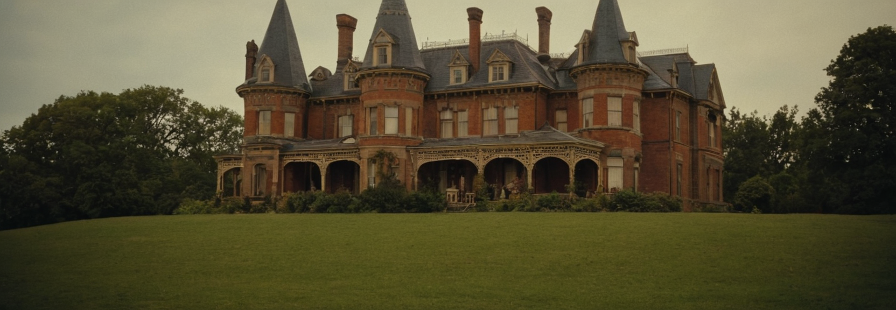
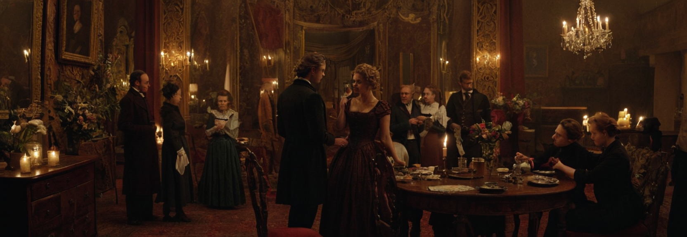

.png)
Kadriļu deju reģionālās atšķirības
Francija
Sarežģītākas figūras un elegantākas kustības
Izcelsmes vieta klasiskajām kadriļu dejām
Bieži dejots aristokrātu ballēs un galmos
Populārākās formas: Quadrille des Lanciers, Quadrille Français
Sarežģītākas figūras un elegantākas kustības
Izcelsmes vieta klasiskajām kadriļu dejām
Bieži dejots aristokrātu ballēs un galmos
Populārākās formas: Quadrille des Lanciers, Quadrille Français
Vairāk koncentrējas uz līniju formācijām
Deja bieži sākas ar partneru sasveicināšanos
Populāra "Country Dance" forma, kas ir līdzīga kadriļu dejām
Bieži iekļauj "do-si-do" figūru (partneri apiet viens otram apkārt)
Ātrs temps un dzīvespriecīgs raksturs
Bieži iekļauj solo deju elementus
Populāra "Ceili" deja, kas ir līdzīga kadriļu dejām
Dejotāji bieži veido kvadrātus vai apļus
"Françaises" - vācu versija franču kadriļu dejām
Bieži iekļauj valša elementus
Precīzākas un strukturētākas kustības
Populāra ballēs un formālos pasākumos

Attīstījās "Square Dance" forma, kas ir cieši saistīta ar kadriļu dejām
Bieži iekļauj "caller" - personu, kas sauc deju soļus
Vairāk neformāla un brīvāka stila deja
Populāra lauku reģionos un folk festivālos
Ietekmēta gan no Rietumeiropas, gan vietējām tautas dejām
Bieži iekļauj lielāku skaitu dejotāju
Var iekļaut elementi no tradicionālajām krievu dejām, piemēram, "prisyadka" (pietupieni)
Populāra cara galmā un aristokrātu aprindās 19. gadsimtā

Kadriļu dejas Latvijā ir cieši saistītas ar tautas deju tradīcijām
Bieži tiek dejots tautas svētkos un zaļumballēs
Iekļauj elementus no latviešu tradicionālajām dejām, piemēram, polkas soļus
Populārākās formas: "Jautrā kadriļa", "Kadrilis ar maiņām"
Raksturīgas četru pāru kvadrāta formācijas
Dejas bieži pavada tradicionālie mūzikas instrumenti, piemēram, ermoņikas vai vijole
Kadriļu dejas Latvijā ir saglabājušas savu popularitāti un tiek mācītas tautas deju kolektīvos